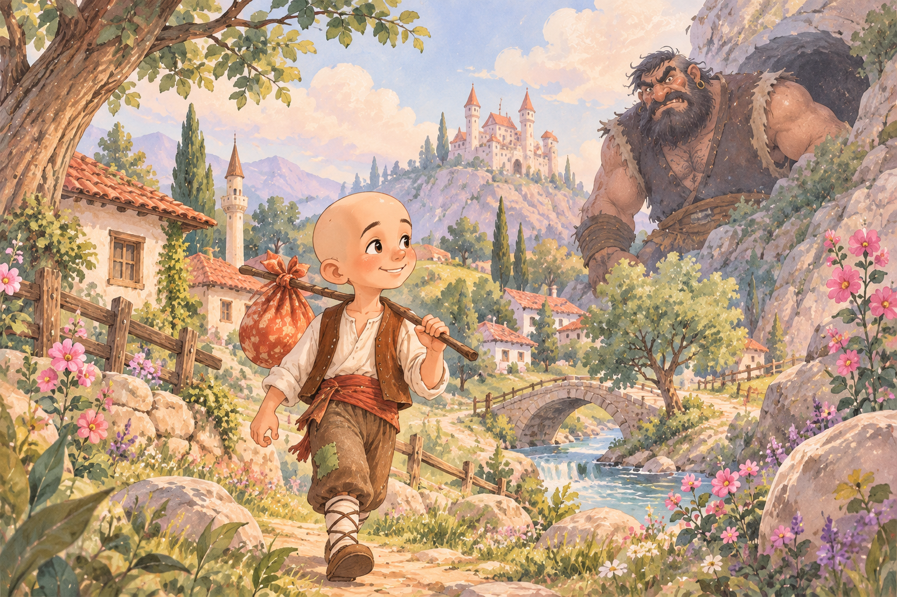
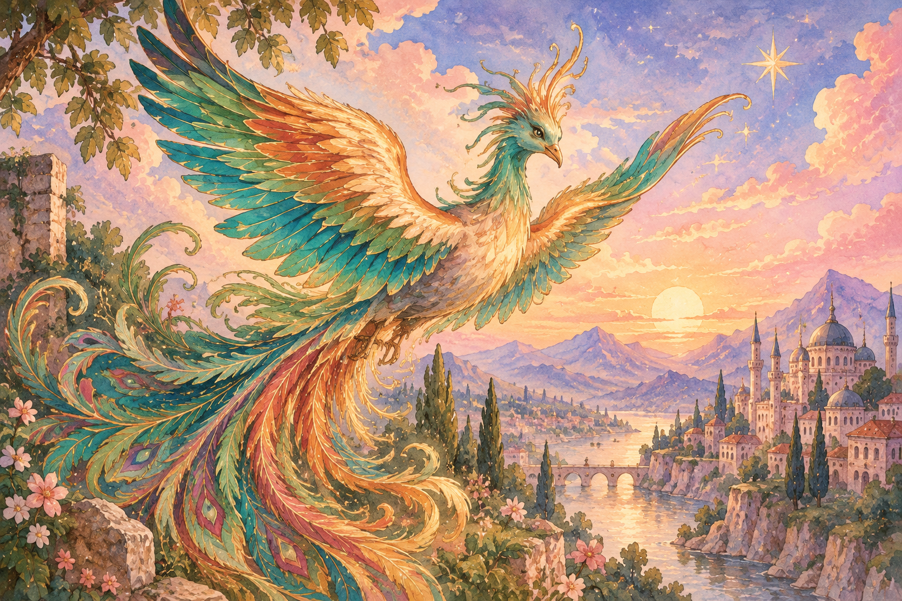
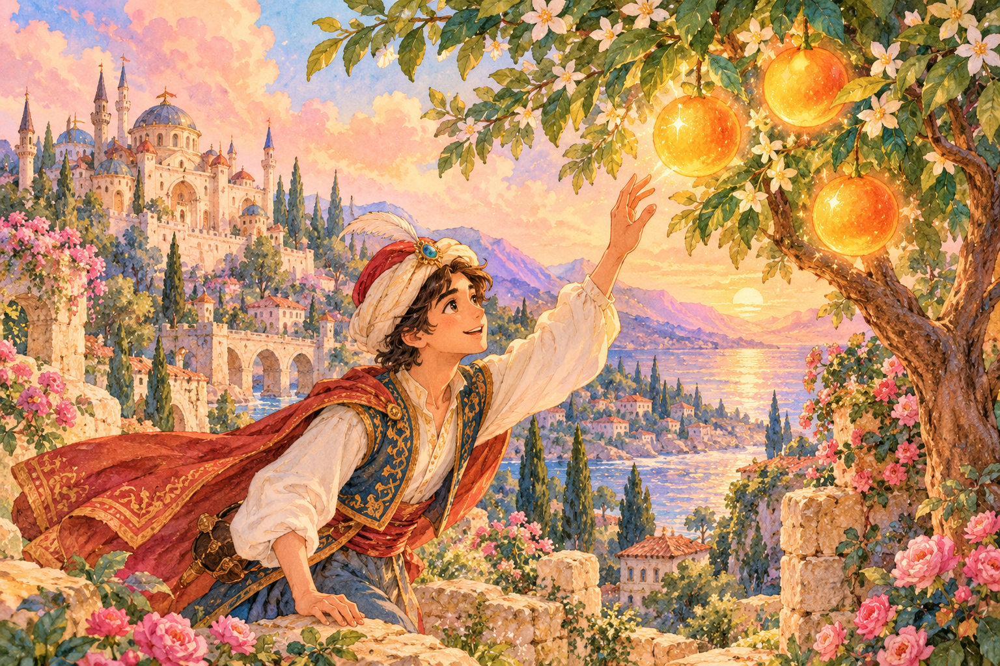
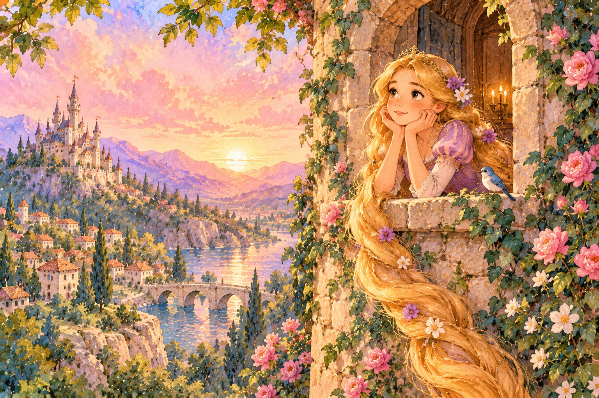
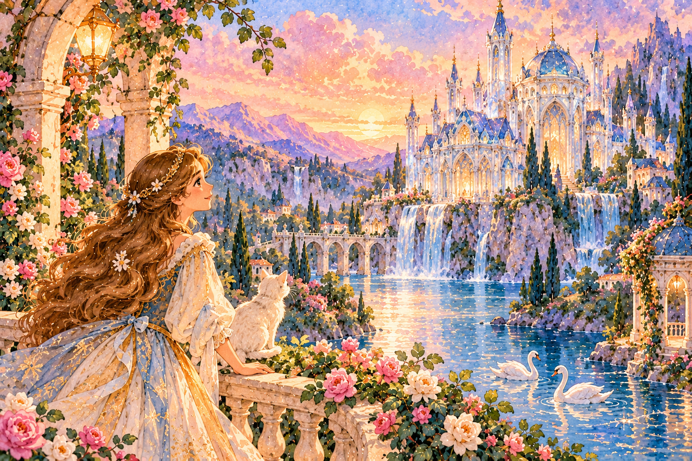
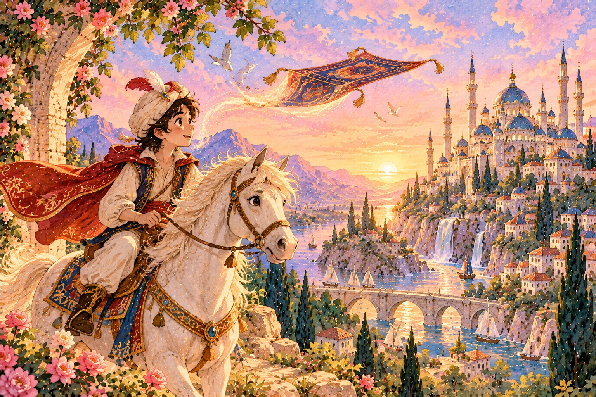
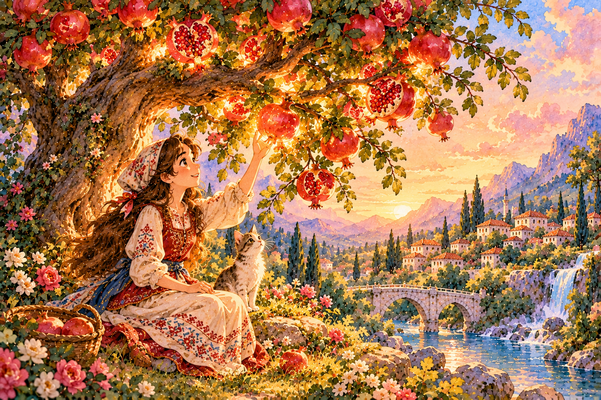
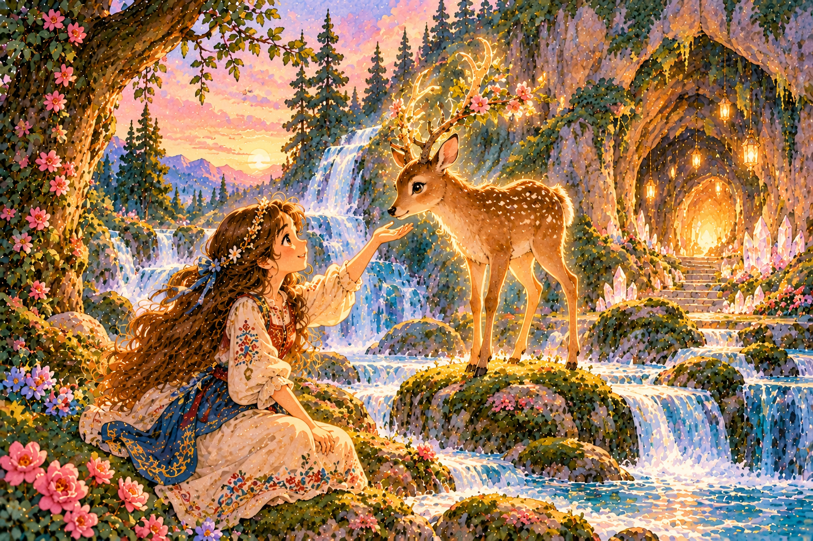
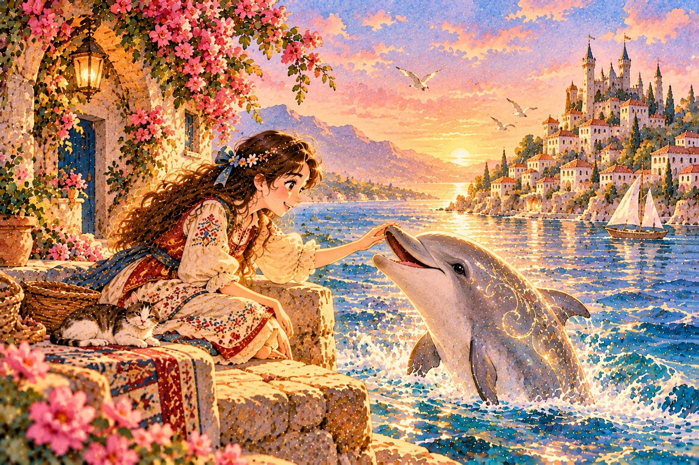
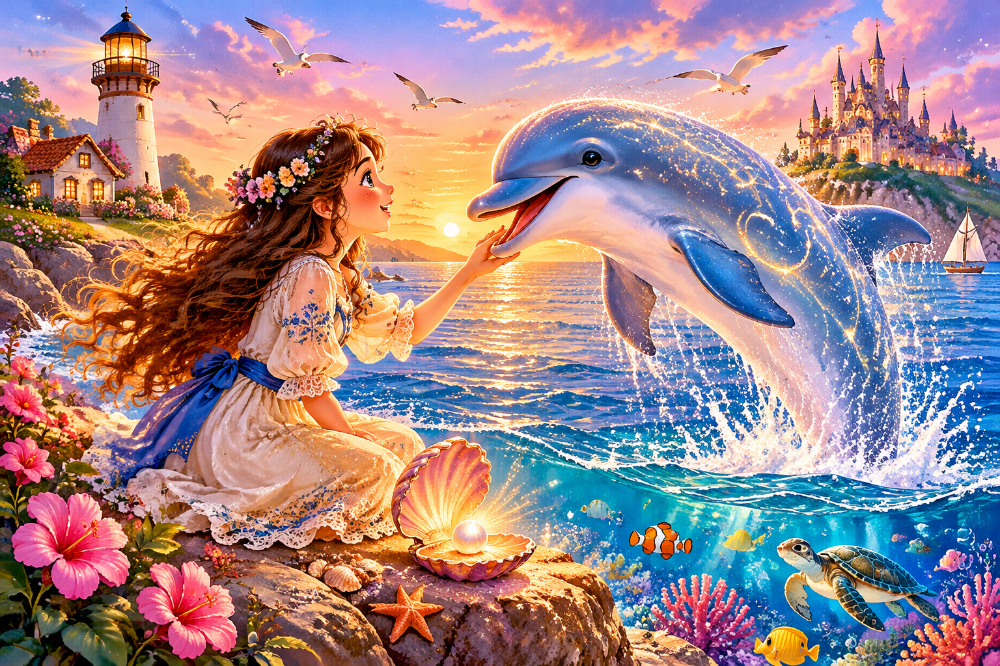

✧ ✦ ✧
Keloğlan ve Dev
Keloğlan'ın zekâsı ve cesaretiyle devlere karşı verdiği mücadeleyi keşfet.
✦ BİR VARMIŞ BİR YOKMUŞ ✦
Hayal gücünün kapılarını arala...
Birbirinden büyülü hikâyeler seni bekliyor.

Keloğlan'ın zekâsı ve cesaretiyle devlere karşı verdiği mücadeleyi keşfet.

Efsanevi Zümrüdüanka'nın büyülü dünyasına doğru yolculuğa çık.

Üç sihirli turunç ve bir şehzadenin büyülü yolculuğunu keşfet.

Altın saçlarıyla tanınan genç bir kızın cesaret, dostluk ve özgürlük dolu büyülü hikâyesini keşfet.

Işıltılı bir köşkün gizemini keşfeden genç bir kızın cesaret ve iyilik dolu büyülü yolculuğuna katıl.

Sihirli bir halının peşine düşen genç bir kahramanın gökyüzüne uzanan büyülü macerasını keşfet.

Gizemli bir nar ağacının sırrını keşfeden genç bir kızın iyilik ve cesaret dolu büyülü yolculuğuna katıl.

Ormanın derinliklerinde karşılaştığı büyülü bir geyikle dost olan genç bir kızın gizemli macerasını keşfet.

Deniz kenarında yaşayan bir kızın, büyülü bir yunusla kurduğu dostluğu ve denizin gizemli dünyasını keşfet.

Ay ışığında parlayan gizemli bir anahtarın sırrını çözmeye çalışan genç bir kızın yıldızlarla dolu büyülü macerasını keşfet.
Bu aramaya uygun masal bulunamadı.
Masal Dünyası, geleneksel masalların büyülü atmosferini dijital ortamda yaşatmak için tasarlanmış bir masal koleksiyonudur. Her hikâye, hayal gücüne açılan yeni bir kapıdır.